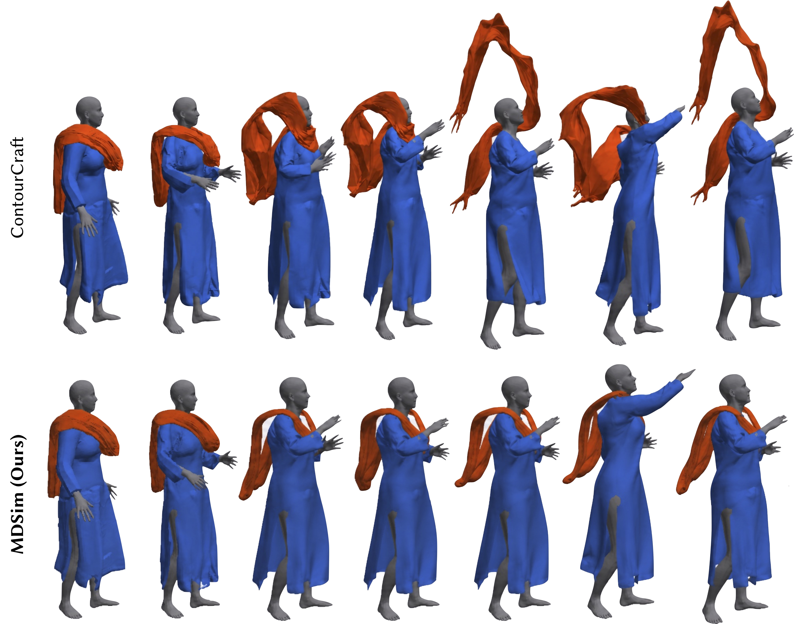

Research Focus: Graph Neural Networks, Multi-Layer Garment Dynamics, Differentiable Tangential Friction, Digital Humans.
Abstract: Draped attire (e.g., dupattas, sarees) has no closed geometric anchor and stays on the body through friction against the layer beneath it alone, yet existing learned cloth simulators primarily model repulsive normal contact, leaving such a layer with nothing resisting tangential motion and free to slide off. To address this, MDSim learns physical tangential friction during self-supervised training via a differentiable friction loss that penalizes tangential slip relative to normal force, scaled by a learned, material-conditioned friction predictor pretrained on published textile friction measurements.

Figure 1: MDSim Qualitative Simulation Results. Multi-layer draped garment simulation showing the outer unpinned dupatta stably draped over the inner kurta across dynamic character motions without sliding off or exhibiting boundary penetration.
Core Contributions
- Inter-Garment Friction Loss: Formulates an inter-garment friction loss for neural cloth simulation, trained end-to-end rather than applied as an expensive post-processing physics correction step.
- Learned Friction Predictor: A learned, per-contact friction coefficient conditioned on fabric physical properties and pretrained on real textile data, eliminating manual parameter guessing.
- Unpinned Multi-Layer Stability: Enables the first stable neural simulation of unpinned, multi-layer draped garments (e.g., dupattas, sarees) over moving SMPL bodies.
- Coupling Instability Isolation: Pinpoints and resolves a two-garment coupling instability in GNN solvers driven by large-area contact forces.
💡 Differentiable Tangential Friction Formulation
At each contact point between garment layers, relative displacement $\Delta \mathbf{r}$ is decomposed into normal and tangential components: $\mathbf{s} = \Delta \mathbf{r} - (\Delta \mathbf{r} \cdot \hat{\mathbf{n}})\hat{\mathbf{n}}$. MDSim penalizes this slip using a pseudo-Huber loss scaled by normal force magnitude and the predicted material friction coefficient $\mu$. This drives the GNN simulator to naturally model stick-slip dynamics without numerical divergence.
Qualitative Comparison
We test MDSim on a multi-layer outfit composed of an inner kurta (5,106 vertices) and an outer unpinned dupatta (4,958 vertices) draped over SMPL bodies. Vanilla simulators (e.g., ContourCraft) fail to retain the dupatta, causing severe sliding and separation within the first second. MDSim maintains stable drape contact over the shoulders across diverse dynamic animations.